| |
|
ENKESİT PAFTALARI İÇİN ŞABLONLAR: YÜZEY VERİLERİ
|
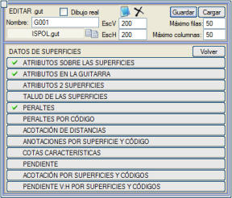Buradan, uygulamanın enkesit dosyasından alabileceği farklı verilerin nasıl dağıtılacağı tanımlanır. Program, farklı bölümlerde hangi tür özniteliğin çıkarılacağını, hangi yüzeyden, bir etiket mi, bir sembol mü yoksa her ikisini birden mi kullanacağını vb. tanımlamaya olanak tanır.
Yüzeyler Üzerindeki Öznitelikler
Bilgi Bandındaki (Gitardaki) Öznitelikler İki Yüzeyi İçeren Öznitelikler Yüzeylerin Şevi Deverler Koda Göre Deverler Mesafe Ölçülendirmesi Yüzey ve Koda Göre Notasyonlar Karakteristik Kotlar Eğim Yüzeylere ve Kodlara Göre Ölçülendirme (Üstyapı Astarları) Yüzeylere ve Kodlara Göre D:Y Eğim Yüzeyler Üzerindeki Öznitelikler Burada, doğrudan enkesit üzerine etiketlenmesi istenen tüm veriler, bir yüzeyin bir tarafına ve bu yüzey içinde belirli kodlara referans verilerek belirtilir. 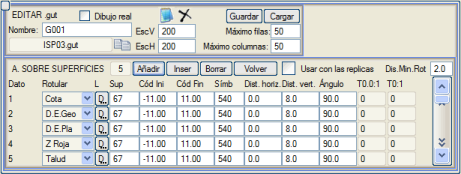
Etiketleme olanakları şunlardır:
Şevi 1.00:1 tipi bir sembolle etiketlemek istendiğinde, bir ondalık basamaklı veya ondalıksız şev değerleri için T0.0:1 ve T0:1 olmak üzere iki yeni sembol tanımlanmasına izin verilir.
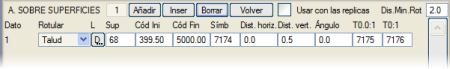
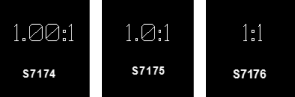
Bu seçenek, kodsuz yüzeylerle de kullanılabilir (örn. sağlam zemin çizgisi 66, bitkisel toprak çizgisi 104,...), bu nedenle, mantıksal olarak, bu durumlarda minimum ve maksimum kod dikkate alınmaz. Ayrıca, programın bilgi bandındaki etiketlerden bazılarını aralarındaki mesafe bu değerden daha az olduğunda kaldırarak çakışmalarını önlemesi için bir etiketler arası minimum mesafe (kağıt mm cinsinden) belirlenebilir. [] Kopyalarla kullan kutucuğu etkinleştirildiğinde, bu menünün tanımları kopyalar üzerinde de çalışır. Bilgi Bandındaki (Gitardaki) Öznitelikler Bu menü, enkesitin belirli yüzeylerine (Yüzey) ait verilerin bilgi bandı alanında etiketlenmesini sağlar: 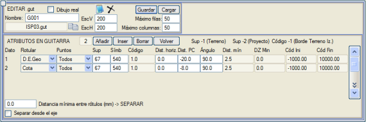
Etiketleme olanakları şunlardır:
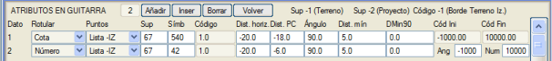
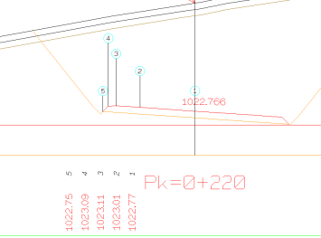
Tüm etiketler için ayrıca referans aldıkları some noktalarına göre bir yatay öteleme, bir karşılaştırma düzlemine olan mesafe ve bir dönüş açısı da belirlenebilir. Ayrıca, programın çakışmaları önlemek için aralarındaki mesafe bu değerden daha az olduğunda bilgi bandındaki etiketleri yeniden konumlandırması için bir etiketler arası minimum mesafe (kağıt mm cinsinden) belirtmek de mümkündür. Eğer Eksenden ayır kutucuğu etkinleştirilirse ve etiketler arası minimum ayırma mesafesi girilmişse, bu, eksenden itibaren hem sola hem de sağa uygulanır. İki Yüzeyi İçeren Öznitelikler Çoğu zaman iki yüzeye atıfta bulunan verileri göstermek ilgi çekicidir. Bu menüde şunları göstermek mümkündür:
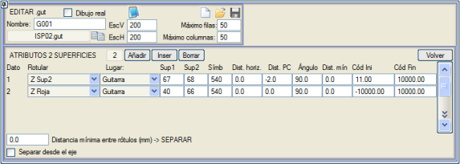
Yer: Etiketleme, yüzey 1'e (Yüzey1), yüzey 2'ye (Yüzey2) veya bilgi bandına göre olabilir. Tüm etiketler için ayrıca referans aldıkları some noktalarına göre bir yatay öteleme, bir karşılaştırma düzlemine olan mesafe, bir dönüş açısı ve çakışmaları veya yüksek veri yoğunluğunu önlemek için etiketler arası minimum ayırma mesafesi (kağıt mm cinsinden) de belirlenebilir. Baş. Kod ve Bit. Kod sütunlarından, işlemi gerçekleştirmek için birinci yüzeyin minimum ve maksimum bir kodunu tanımlamaya izin verilir. Yüzeylerin Şevi Belirtilen yüzeyin (Yüzey1) Maks. Şev değerinden (yatay/dikey oranı) daha düşük eşit şevlerini etiketlemeyi sağlar. Şevin yönüne göre, Smb- ve Smb+ sembolleri (varsayılan olarak sırasıyla 173 ve 174) kullanılacaktır. 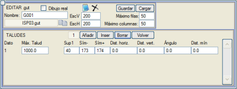
Ayrıca, bir etiketleme için yatay ve dikey öteleme (şevin ortasından ölçülür) ve bir açı (varsayılan semboller olan 173 ve 174 için, istisnalar dışında sıfır olmalıdır) da belirtilebilir. Ayrıca çakışmaları önlemek için semboller arası minimum ayırma mesafesi (kağıt mm cinsinden) de belirlenebilir. Deverler Her bir enkesitteki deverlerin etiketlenmesi bu menüden ayarlanabilir: 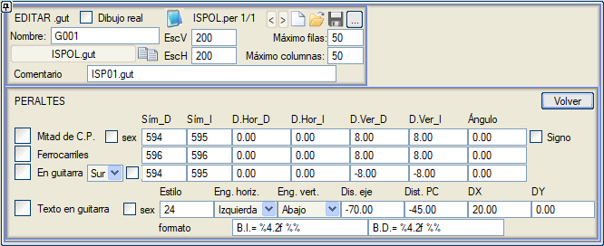
Bu etiketleme şu şekilde olabilir:
derece seçeneği, çeşitli alanlarda mevcuttur ve etiketleme değerini derece cinsine çevirir. Metin bilgi bandında kutucuğu işaretlendiğinde, B.I.= -2.00 B.D. = 2.00 şeklinde iki etiket, belirtilen stil ve yerleştirme noktası (yatay ve dikey bağlantılar) ile temsil edilir. Etiketleme formatı, format kutucukları aracılığıyla değiştirilebilir. Ayrıca, eksene ve karşılaştırma düzlemine bir mesafe belirtilmelidir. DX değeri ile ilgili olarak, bu, sağ ve sol (B.I. ve B.D.) etiketler arasındaki mesafeyi temsil eder. DY değerinden, sol ve sağ deverlerin göreli Y koordinatını değiştirebiliriz. Koda Göre Deverler 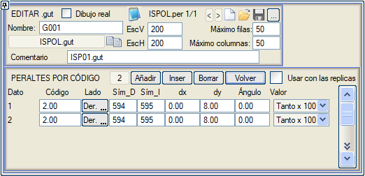Bu seçenek, dever etiketlerinin kırmızı kot üzerine yerleştirilmesini daha da özelleştirmeyi sağlar. Bu durumda, kırmızı kotun (yüzey 67) bir koduna özgüdür ve program, o kod ile bir sonraki arasındaki mevcut deveri hesaplar ve segmentin ortasına etiketler. Ayrıca, etiketin eksenin sağ veya sol tarafına mı ait olduğu belirtilir, sağa ve sola dever için bir sembol ve belirtilen kod ile bir üstteki arasındaki segmentin noktasına göre bir yatay ve dikey öteleme belirtilir. Ayrıca, bir dönüş açısı da belirtmek mümkündür. Sıfır değerli bir açı, 594 ve 595 gibi devere özel sembollerin, devere bağlı olarak çizilirken otomatik olarak dönmesine neden olur. Değer açılır menüsü, deverin Yüzde, Birim Başına veya Derece Cinsinden temsil edilip edilmeyeceğini seçmeyi sağlar. [] Kopyalarla kullan kutucuğu etkinleştirildiğinde, bu menünün tanımları kopyalar üzerinde de çalışır. Mesafe Ölçülendirmesi 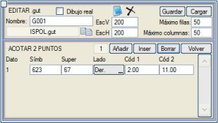Bir yüzeyin iki kodu arasındaki gerçek mesafeyi etiketler. Bunun için, mesafeyi etiketlemek için kullanılacak sembol tipini, yüzeyi ve eksene göre tarafını (sağ veya sol) ve bu mesafenin hangi kodlardan ölçüleceğini belirtmek yeterlidir. Sembolün belirtilen segmente paralel gösterileceği, dolayısıyla dönüş açısının otomatik ve kodların sırasına uygun olduğu dikkate alınmalıdır. Eğer sembol ters görünüyorsa, Kod 1 ve Kod 2'yi değiştirmek yeterlidir. Yüzey ve Koda Göre Notasyonlar Bu menü, YÜZEYLER ÜZERİNDEKİ ÖZNİTELİKLER menüsüne çok benzer. Bu durumda, etiketlenecek bir özellik, eksene göre taraf (sağ veya sol), yüzey ve belirtilecek sembol tipiyle bir verinin temsil edilmek istendiği kod belirtilir. 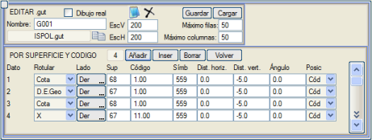
Etiketleme olanakları şunlardır:
Kodlanmamış yüzeyler için, kod 0 koyarsak ilgili tarafın ilk noktasını kullanır ve 99999 veya daha yüksek bir değer koyarsak son noktayı kullanır. Karakteristik Kotlar Bu diyalog kutusundan aşağıdaki karakteristik kotlar etiketlenebilir:
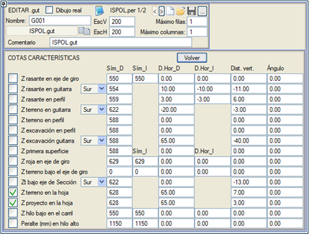
Tüm durumlarda, etiketleme yapmak için bir sembol tipi atanmalıdır ve ayrıca yatay ve dikey ötelemeler ile bir dönüş açısı da belirtmek mümkündür. Dever eksenindeki Z kırmızı kot ve Dever eksenindeki Z kırmızı kot farkı durumunda, sembol tipi ve yatay öteleme için sağ ve sol arasında ayrım yapılır. Dikey öteleme ile ilgili olarak, bu, bilgi bandı alanında etiketleme yapıldığında karşılaştırma düzlemine göre olacaktır. Ek bir tamamlayıcı olarak, karakteristik kotları temsil eden semboller, sembolün kotu olarak KM değeri ve paftalarda etiketlenmesi için öznitelik olarak karakteristik kot değeri geçirilerek paftaya eklenir. Bu şekilde, Değiştir → Sembol → Sayısal düzenleme (MD) seçeneğinden bir sembol listesi yapılırsa, şu şekilde bir liste elde edilebilir: X Y KM Karakteristik_Kot
Eğim Şevlerin etiketlenmesi durumuna benzer şekilde, Min.Eğim - Maks.Eğim (%) aralığında olduğu sürece enine eğimlerin etiketlenmesidir. Bir aralık kullanmak, eğim aralığına bağlı olarak farklı semboller kullanmayı sağlar. 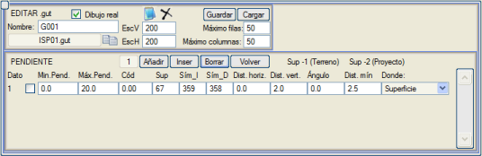
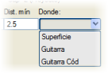 Program, bu eğimleri belirtilen yüzeye (Yüzey) göre, ya yüzeyin kendisinde ya da bilgi bandı alanında, Nereye sütununda belirtilene bağlı olarak etiketleyecektir. Eğimlerin yerleşimi için bir Yüzey'den, Bilgi Bandı'ndan veya Bilgi Bandı Kod'dan başlama imkanım olacak, bu sayede veri, segmentin orta noktası yerine kodun altındaki bilgi bandında etiketlenir. Ayrıca her veri için bir kod tanımlamak da mümkündür. Kod sıfırdan farklı ise, sadece o kodda biten kesim etiketlenir. Doğal olarak, kullanılacak sembol tipini belirtmek gerekecektir (sağ ve sol için farklı sembol). Ayrıca, bir etiketleme için yatay ve dikey öteleme (her segmentin ortasından ölçülür) ve bir açı (varsayılan semboller olan 358 ve 359 için, istisnalar dışında sıfır olmalıdır) da belirtilebilir. Ayrıca çakışmaları önlemek için semboller arası minimum ayırma mesafesi (kağıt mm cinsinden) de belirlenebilir. Son olarak, her satırın başındaki kutucuk, eğimin yüzde yerine birim başına etiketlenmesini sağlayacaktır. Yüzeylere ve Kodlara Göre Ölçülendirme (Üstyapı Astarları) Aşağıdaki alt menü, enkesitlerde iki kod arasındaki mesafeyi ölçülendirmeyi sağlar: 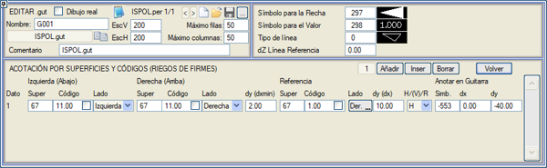
Bir ölçülendirme çizmek için, sol ve sağ uçlara karşılık gelen yüzeyi, kodu ve eksenin tarafını belirtmek gerekir. Dikey ölçülendirme çizgileri o yüzeylere göre referans alınır ve belirtilen dy mesafesinden başlar. Ölçülendirme oku, belirtilen referans yüzeyinin (sağ veya sol) kodundan dikey bir dy mesafesine yerleştirilecektir. Bu, aynı yatayda ardışık ölçülendirmeler göstermeyi sağlar. Taraf sütununda, sol/sağ yerine, ucun plandaki eksen olmasını seçebiliriz (bu durumda yüzey veya kod belirtmeye gerek kalmaz). Kod sütunundaki kutucuğu etkinleştirerek, program belirtilen değerin hemen altındaki kodu arayacaktır. Pencerenin üst kısmında, ok ve değer etiketlemesi için sembol tiplerini ve ölçü çizgisinin tipini belirterek ölçülendirmenin görünümünü yapılandırabiliriz. Aşağıdaki örnek, Romanya'ya karşılık gelen program kütüphanesindeki ROM_003.gut şablonuna aittir ve yukarıdakileri göstermektedir: 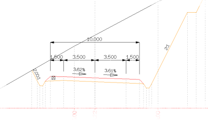
Üstyapı astarları için bu tür ölçülendirmeleri yapmak için ek bir menü vardır. Normal menüyle aynı şekilde kullanılır, Yatay, Dikey veya Üstyapı astarları arasında seçim yapmak için ek bir Y/D/Ü sütunu bulunur. Bu menü, genişletme ve/veya takviye bölgelerini ölçülendirmek için de yararlı olabilir. Bilgi bandına yaz: ölçülen mesafenin bir notasyonunu bilgi bandına ekleyebilirsiniz. Yüzeylere ve Kodlara Göre D:Y Eğim Bu alt menü, belirtilen yüzeyin eğimlerini D:Y şeklinde etiketlemeyi sağlar: 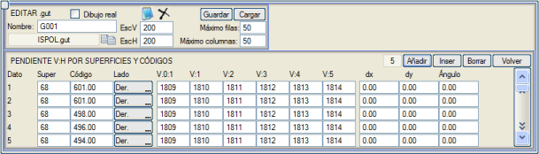
Etiketlenmek istenen eğim, yüzey kodu ve taraf (sağ veya sol) aracılığıyla referans alınır, böylece program o some noktası ile bir önceki arasındaki segmenti etiketler. Aşağıdaki veri sütunları, kullanılacak sembol tiplerinden başka bir şey değildir; öyle ki, 1810 1:1 eğimleri, 1811 1:2 eğimleri, 1812 1:3 eğimleri vb. etiketler. Diğer durumlar için, 1, 2, 3, 4 ve 5'ten farklı bir gerçek sayı olan x için x:1 tipi eğimleri etiketlemeyi sağlayan 1809 sembolü kullanılır. Sembol, belirtilen dx ve dy mesafeleriyle segmentin merkezine göre ötelenmiş olacaktır. Ayrıca sıfırdan farklı bir açı girilirse, o açı kullanılacaktır, aksi takdirde sembol segmente paralel gösterilecektir. Kütüphanede yer alan ROM_002.gut ve ROM_003.gut şablonları bu seçenekleri kullanır. |